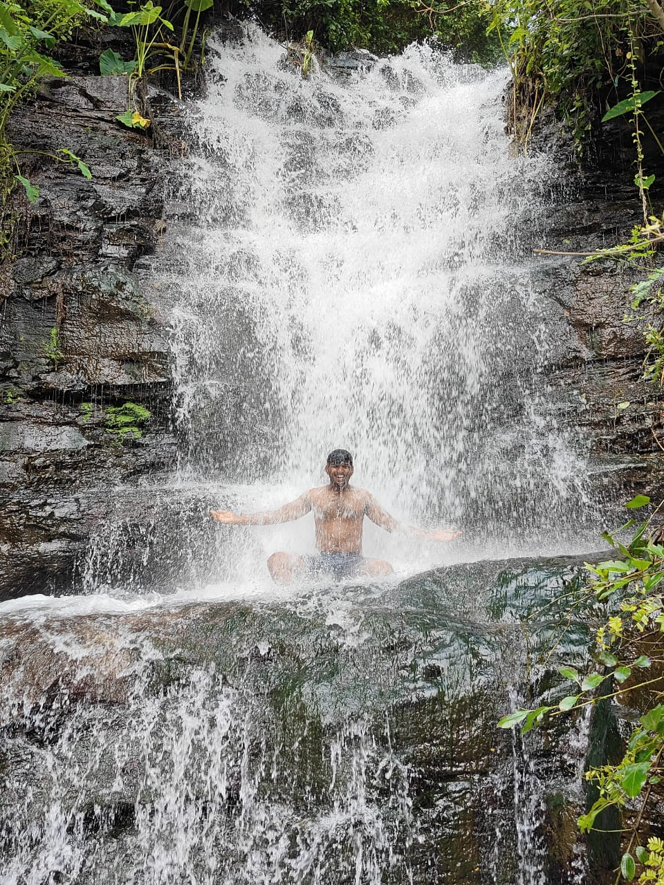

Tourist Places in Srisailam

Mallikarjuna Swamy Temple
The Mallikarjuna Swamy Temple is one of the twelve Jyotirlingas of Lord Shiva, making it a significant pilgrimage site for Hindus. Located on the southern bank of the Krishna River, the temple is known for its stunning architecture and spiritual ambiance.

Srisailam Dam
The Srisailam Dam is one of the largest dams in South India, built across the Krishna River. It offers breathtaking views of the surrounding hills and forests and is a popular spot for nature lovers and photographers.

Srisailam Wildlife Sanctuary
The Srisailam Wildlife Sanctuary, also known as the Nagarjunsagar-Srisailam Tiger Reserve, is a vast area of protected forest. It is home to a wide variety of flora and fauna, including tigers, leopards, and a variety of bird species. The sanctuary is ideal for wildlife enthusiasts and adventure seekers.

Pathala Ganga
Pathala Ganga is a section of the Krishna River near Srisailam, known for its spiritual significance and scenic beauty. Visitors can take a ropeway or boat ride to reach this sacred spot, offering stunning views of the river and surrounding hills.

Akka Mahadevi Caves
The Akka Mahadevi Caves are ancient natural caves located near the Srisailam Dam. Named after the famous ascetic poet Akka Mahadevi, these caves are a historical and spiritual destination, accessible by boat along the Krishna River.

Srisailam Waterfalls
Srisailam Waterfalls, located in the Nallamala Hills, are a breathtaking natural attraction. These cascading falls offer serene views and are a perfect spot for nature lovers. The surrounding lush greenery and peaceful ambiance make it an ideal destination for a day trip.

Octopus View Point, Srisailam
Octopus View Point, located near Srisailam in Andhra Pradesh, is a breathtaking spot that offers stunning panoramic views of the surrounding landscape. This viewpoint gets its name from the unique shape of the Krishna River as it winds through the hills, resembling the tentacles of an octopus. Perched at a high altitude, the view from this point is mesmerizing, with the lush green hills, deep valleys, and the shimmering river below creating a picture-perfect scene.
Visitors to Octopus View Point can enjoy the serene beauty of nature, making it an ideal spot for photography, relaxation, and simply soaking in the natural surroundings. The journey to this viewpoint is equally enchanting, with scenic routes that add to the overall experience. Whether you're a nature lover, a photographer, or someone seeking peace, Octopus View Point is a must-visit destination near Srisailam.